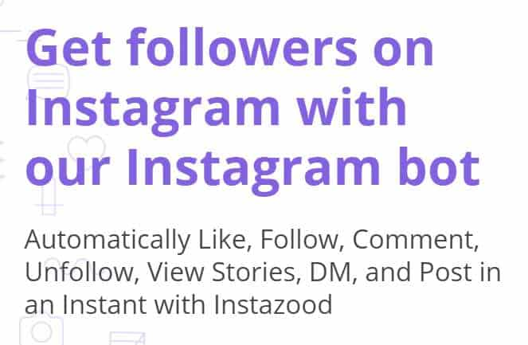
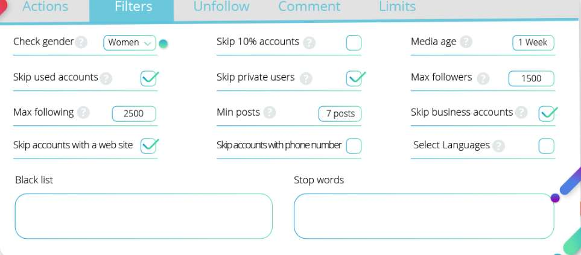
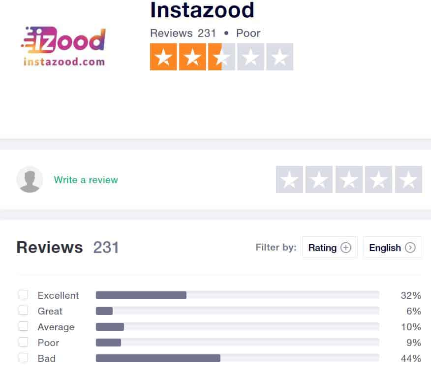

Looking for unbiased information about Instazood? Wondering if it’s worth using for your Instagram account? When you’re done reading this Instazood review you’ll know exactly how the platform works, how much it costs, pros & cons, and if it’s worth buying today.
Keep in mind, there are hundreds of Instagram bots out there that promise to grow your account with real followers. The problem is most of them fail to deliver, and some are downright scams. It’s important to do your research first, as you are now, so you can avoid falling for scams or losing access to your account.
What is Instazood?

Instazood is an online-based Instagram automation bot. The tool can complete a wide range of activity on your Instagram account such as; liking posts, leaving comments, following users, viewing stories, and much more. The good news is you can configure the bot from your web-browser, no need to download any files. In other words, it’s very convenient to access. However, there is an application to download, if you need it.
Do We Recommend Instazood?
You might be wondering if Instazood is a bot we recommend. Unfortunately, for reasons we’ll be mentioning later on in this review, Instazood isn’t a bot we recommend at this time. Maybe if the company updates and adds certain features, we’ll change our opinion. Until then, we feel like there are better options.
Instazood Alternatives:
Looking for an Instazood alternative? Check out these highly recommended tools:
Kenji.ai
Kenji is a very cool Instagram bot because it uses artificial intelligence to interact with users and complete tasks. The bot will essentially memorize how you interact with your account and then continue the same pattern, on it’s own, completing on auto-pilot.
But the best part about Kenji.ai is the price. Even though the service quality is identical to other bots, Kenji costs a fraction of the price. It’s a very useful tool, and definitely worth looking into.
Upleap
Technically, Upleap is not a Instagram bot. The way Upleap works is quite interesting to say the least. What they do is hire real social media marketers to take control of your account and automate activity based on your instructions and settings.
When you first create an account you’ll be asked to write a profile description, fill in hashtags, and specify similar accounts. From there, your part is done, and you can watch as your account manager works in the background.
Although this tool is a little pricey compared to other bots, it’s much safer, and the followers seem to be more genuine. Upleap is one of our favorite Instagram tools.
Now, let’s get back to our Instazood review.
How Much Does Instazood Cost?
Instazood is like a suite of Instagram tools and each requires it’s own subscription. Currently, there is no Instazood membership that includes all of the services and features. Nevertheless, the services and prices are listed below.
One thing to keep in mind is each service includes a free 3-day trial.
Instazood Services and Features:
- Instagram Bot – $14.99/month
- Post Manager- $9.99/month
- Comments Tracker – $9.99/month
- Direct Message – $14.99
- Buy Likes and Views (Custom)
To give you an idea:
If you choose to use all of the services, the total would come to $49.96 a month. On the other hand, the company uses a balance system where you can easily add money and time to each service.
Click the Add More Days button and a window will pop up asking which services you want to spend your balance on. Simply check or unchecked the ones you need and the desired amount of time, and that’s it.
Time Periods:
- 7 Days
- 15 Days
- 30 Days
- 3 Months
- Six Months
- One Year
And remember: one thing to note here is all of them are selected by default, so you’ll have to manually deselect the ones you don’t want.
Instagram Bot:

Now Instazood’s bot works about the same as many other Instagram automation bots. It has the whole package of auto-services, such as: Follow, Like, Comment, and Unfollow.
There are also plenty of activity and target filters to narrow down your audience, making sure the bot only interacts with relevant accounts. To start the bot, click Add Target under the Promotions tab.
Post Manager:
Rather self-explanatory, but there are some features worth talking about. For one, you can manage most of the posts already on your Instagram account and edit the details.
You can also schedule, draft, and delete posts. Personally, I like the schedule feature. Scheduling Instagram posts far into the future can provide you with some peace of mind so you don’t need to actively work on publishing something every day.
Comments Tracker:
This service makes it easy to manage comments on your posts. You can: mark comments as important, delete comments, and reply to comments. I feel like this tool isn’t as important because you can easily manage comments from the Instagram website or app. Nevertheless, it’s an option for you.
Direct Message:
What this service does it let you auto direct message people. You can send welcome messages, send mass messages to followers, send messages to non-followers, and even put images in your messages. It’s a pretty useful tool for marketers, but I feel like it edges into spam-territory.
Instazood Pros
Now that you have a good idea of what Instazood offers, let’s take a look at the pros and cons.
Decent Instagram Bot Service 🔥
From what I could tell, the Instagram bot seems to work well. Inside the dashboard, you can easily toggle the activity that you want. I recommend using one or two at a time. It can automate pretty much every kind of activity for you which is nice.
Post Schedule Function is Always Great 🔥
It’s always nice to have a Post Schedule service, it makes things a lot easier. I always appreciate it when I come across a tool that offers this service. Definitely a thumbs up for this one.
Very Easy to Use 🔥
The dashboard if very well organize and simple enough for anyone to learn how to use it. Creating and connecting it to your Instagram only takes a couple of minutes too. Most of the people who used Instazood love how easy it is to get everything started.
Can Use Your Own Proxies 🔥
On the web-version, you can’t configure your own proxies, but you can when you download the application. Some marketers will prefer to use their own proxies because they can know for sure that they’re safe.
Instazood promises their default IPs are safe, but some people prefer to use their own. Either way, it’s nice feature, and one way to get some peace of mind.
Good Amount of Filters & Targets 🔥
When you click the Add New Promotion tab you’ll see four target options for you: Followers, Locations, Hash-tags, and Targets. The last one, Targets, requires you to upload a file with your target user’s ID list. Once you have a promotion running with targets, you can add filters for each of the actions.
Filters include:
- Check Gender
- Media Age
- Skip 10% of Accounts
- Set Limits on Follows
- Min Posts
- Skip Accounts with a Website
- Black List
- Max Followers
- And more.
Overall, a good amount of targets and filters. I like how you can set limits on interactions, it’s a great way to reduce the risk of being banned from Instagram.
Can Connect Multiple Accounts 🔥
If you manage multiple Instagram accounts, you’ll be happy to hear Instazood allows you to connect unlimited accounts. The only downside here is you need to pay for each one. For example, if you want to use the Instagram Bot on three accounts, then you have to buy it for each account.
Instazood Cons
But even though the tool has some upsides, there are some downsides you need to know about.
Low Trust Pilot Rating 👎

I noticed the Trust Pilot rating for Instazood is labeled “Poor” with a 2.5/5 star review. Sometimes this rating can be manipulated.
For example, if there are only a couple people reviewing the product and they both leave a bad rating then the overall rating will be terrible. That doesn’t seem to be the case here. At the moment, there are 231 reviews, and 44% of reviews gave it a one star review.
Unstable Performance 👎
One thing I noticed is the performance can be unstable and inconsistent at times. What I mean is sometimes the bot won’t work, or work incredibly slowly, and other times it will work very fast.
A lot of other users complain about this issue too, some of them even said the bot never worked for them, even after paying the monthly subscription.
Complete Suite is Expensive 👎
If you’re looking to buy the full suite of tools, the total will come to quite a bit. I wish there was a discounted subscription that combines all the services. While we’re on the subject of services, I think it’s kind of annoying to pay for so many different ones at the same time.
I also feel like some of the services are a bit too expensive for what they offer. For instance, the Comment Tracker is $9.99 a month. I can manage comments for free through the Instagram website or app.
Customer Support is a Little Slow 👎
Instazood claims their customer support usually replies to questions within 24 hours. But from what I could tell, it takes a lot longer than that.
Most of the people on the Trust Pilot page are unhappy with the customer support, which may be why they leave such negative reviews. Another thing to keep in mind is they don’t have phone or live-chat support – everything is done through email tickets.
Reports of Instazood Locking Instagram Accounts 👎
Seems like there are some cases of people getting locked out of their Instagram account after using this tool. The issue could stem from Instazood’s service, but it could have been caused by the users.
For example, one thing that can get your account locked, and that Instazood advises against, is using your account while the software is active.
Then again, the service could just be unreliable. To avoid issues, I recommend digging through the Instazood help archives and tutorials to make sure the fault is not on your end. Activating Night Pause is another way to avoid issues with Instagram. And switching to Slow speed is a good idea too.
Frequently Asked Questions
An official Instazood FAQ can be found here, but we made our own unbiased one for you.
Is Instazood Good?
After testing out the tool and reading other people’s opinions online, I can say Instazood is a good enough bot. The service usually works as advertised, although you might run into some hiccups here and there. But the unstable growth littered with fake accounts can be bothersome. When it works, it works great, but it’s a fifty-fifty chance.
Is Instazood Cheap?
Yes, Instazood is cheap. As a matter of fact, the bot service is quite budget-friendly. It only costs $14.99 a month and it includes a free three day trial. On the other hand, if you want to use all the other services, it costs quite a bit. Still, I like how you can choose to only pay for the services you need.
Is Instazood Safe?
The software itself is safe, but there are precautions you can take to beef up safety levels. For one, use your own proxies (if they’re from a trusted source). Next, use the anti-spam filters, such as: Skip 10% of Accounts, Night Pause, add appropriate limits, decrease speed, use good filters, and don’t use your account when the bot is active. Overall, Instazood is quite safe.
Why Don’t We Recommend Instazood?
Personally, I feel like the service is a little unstable. And, when compared to other bots, the growth isn’t that great. I noticed a lot of fake accounts in our followers, and the bot wasn’t even interacting with that many people. Look, Instazood isn’t a bad service, I would rank it somewhere in the middle, a neutral area, but it’s definitely not one of the best.
Wondering what are the best Instagram managers out there? I recommended two of our favorites, Kenji.ai, and Upleap, but there are others too. For a full list of our selected Instagram tools, check out this article.
Thanks for taking the time to read this Instazood review!